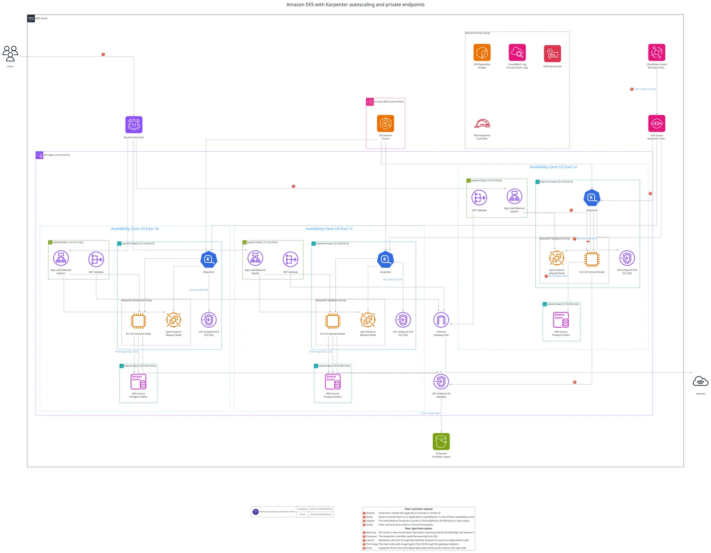
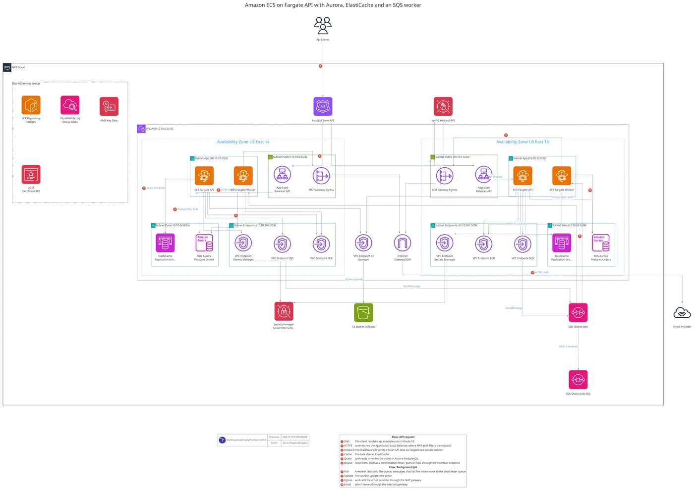
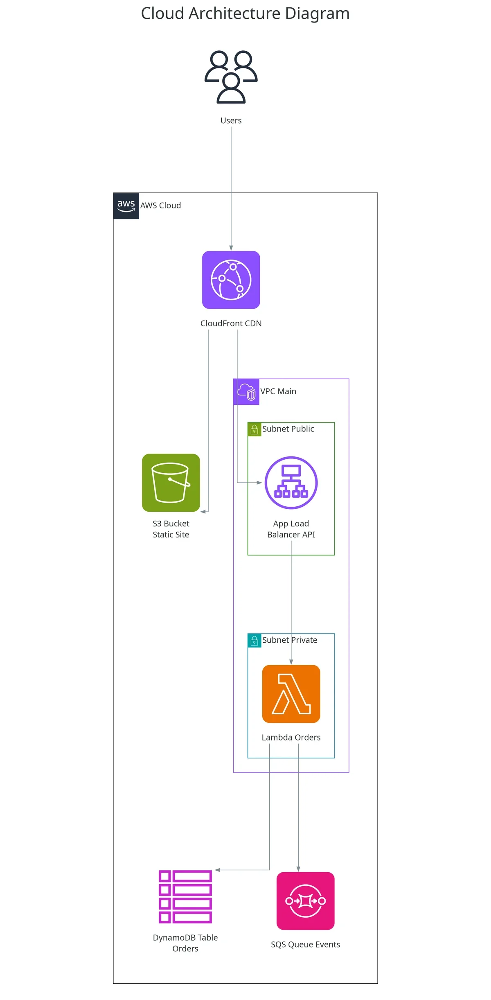
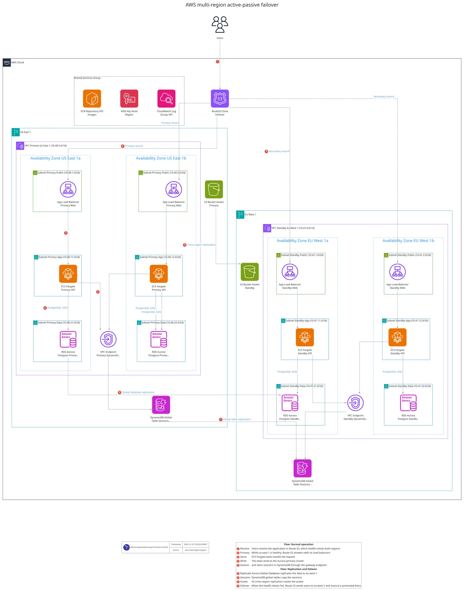

Not just boxes. Architecture.
Official AWS, Azure and Google Cloud icons, with every resource in its VPC, subnet and zone. Describe it to your AI assistant, or draw straight from your Terraform. Built from terraform plan, so what you see is exactly what deploys. It runs on your computer and needs no cloud access.
claude plugin marketplace add patrickchugh/terravision
See TerraVision draw four architectures in a chat
I'll draw this with TerraVision, using the official AWS icons.
Here it is: every resource sits in its VPC, availability zone and subnet. Saved as PNG, SVG and an editable draw.io file.

click to enlargeDesign to code. Code to diagram.
Sketch a new system by talking to your assistant, then have it write the Terraform. Or point TerraVision at Terraform you already have and see exactly what terraform plan says it deploys.
Describe it, refine it in conversation, then ask for the code. Your assistant writes the Terraform and redraws it to check its own work.
 three-tier-web.png
three-tier-web.pngdrawn from your prompt
Built from terraform plan, so the picture is what the code deploys: modules, count, for_each and variables resolved.

Every example ships with its prompt.
Copy a prompt into Claude or ChatGPT to draw something similar, then keep talking: "add a WAF", "make it multi-region". Or reproduce one exactly from its source graph.
Draw prod without prod access.
TerraVision draws what your Terraform will deploy, from the code alone. The infrastructure doesn't have to exist yet, and you need no access to any account it deploys to. Live cloud scanners can't do that.
- One codebase, every environment. Swap the variables file to draw dev, staging or prod.
- 100% client-side. Your code and plan never leave your machine.
- Remote sources too. Draw a Git repository or a subfolder of one, and Terragrunt projects with one or many modules.
# draw each environment from its variables file terravision draw --source ./infra --varfile prod.tfvars --outfile prod-architecture # a Git repository, a subfolder, or a branch terravision draw --source https://github.com/user/terraform-repo.git//aws/vpc terravision draw --source https://github.com/user/terraform-repo.git?ref=develop # just the services, as a JSON graph terravision graphdata --source ./infra --outfile architecture.tvg.json
A few lines of JSON. No new language to learn.
Each key is <terraform_resource_type>.<name>; each value is what it connects to or contains. That is the whole format. Add titles, labels and numbered flows in a YAML file next to it.
{
"tv_aws_users.users": ["aws_cloudfront_distribution.cdn"],
"aws_cloudfront_distribution.cdn": ["aws_s3_bucket.static_site", "aws_alb.api"],
"aws_vpc.main": ["aws_subnet.public~1", "aws_subnet.private~1"],
"aws_subnet.public~1": ["aws_alb.api"],
"aws_subnet.private~1": ["aws_lambda_function.orders"],
"aws_alb.api": ["aws_lambda_function.orders"],
"aws_lambda_function.orders": ["aws_dynamodb_table.orders", "aws_sqs_queue.events"]
}
{
"tv_azurerm_users.users": ["azurerm_cdn_frontdoor_profile.edge"],
"azurerm_cdn_frontdoor_profile.edge": ["azurerm_linux_web_app.api"],
"azurerm_resource_group.app": ["azurerm_virtual_network.main", "azurerm_mssql_database.orders", "azurerm_servicebus_queue.events", "azurerm_key_vault.secrets"],
"azurerm_virtual_network.main": ["azurerm_subnet.app"],
"azurerm_subnet.app": ["azurerm_linux_web_app.api"],
"azurerm_linux_web_app.api": ["azurerm_mssql_database.orders", "azurerm_servicebus_queue.events", "azurerm_key_vault.secrets"]
}
{
"tv_gcp_users_icon.users": ["google_compute_global_forwarding_rule.lb"],
"google_compute_global_forwarding_rule.lb": ["google_cloud_run_v2_service.api"],
"google_cloud_run_v2_service.api": ["google_sql_database_instance.orders", "google_pubsub_topic.events", "google_storage_bucket.assets"],
"google_pubsub_topic.events": ["google_cloudfunctions2_function.worker"]
}
format: '0.3'
title: AWS three-tier web application
update:
aws_vpc.main:
cidr_block: 10.0.0.0/16
connect:
aws_cloudfront_distribution.cdn:
- aws_alb.web_alb~1: HTTPS 443
- aws_s3_bucket.static_assets: Origin access control
aws_alb.web_alb~1:
- aws_instance.app~1: HTTP 8080
flows:
Customer request:
description: A customer loads a page
steps:
- resource: tv_aws_users.users -> aws_cloudfront_distribution.cdn
xlabel: Request
detail: The browser requests the site from CloudFront
- resource: aws_cloudfront_distribution.cdn -> aws_alb.web_alb~1
xlabel: API call
detail: API calls go to the load balancer in either zone
aws_*), Azure (azurerm_*) and Google Cloud (google_*)
terravision draw --source aws.tvg.json --format svg
Diagrams that redraw themselves.
Point the TerraVision GitHub Action at your Terraform, and the diagram updates on every change. A terravision.yml next to the code keeps the title, numbered flows and labels in every version.
- uses: hashicorp/setup-terraform@v3
- uses: patrickchugh/terravision-action@v2
with:
source: ./infrastructure
outfile: docs/architecture
format: both

GitLab, Jenkins, Azure DevOps and others: CI/CD integration guide →
Pictures for the review. Files for the work.
Official icons, real grouping
The provider's own icon sets, with resources inside their VPC or VNet, availability zone, subnet and resource group: the conventions a cloud architect follows.
Editable draw.io
Open the export in draw.io, Lucidchart or any mxGraph editor and polish it by hand.
PNG, SVG, PDF
SVGs embed their icons and open in any browser or docs site.
Interactive HTML
One file: click any resource to see its settings, search, pan, zoom and animated flows.
Try the live demo →Flows & labels
Titles, arrow labels and numbered flow steps with a legend, from YAML or your assistant.
MCP server & skill
Diagram tools for any MCP client, and a skill that teaches agents the graph format.
100% client-side
No cloud credentials, no uploads. Your code never leaves your machine.
AI annotations
Suggested labels and flows from Bedrock, a local Ollama model or any OpenAI-compatible API.
Terragrunt ready
Single- and multi-module Terragrunt projects are detected automatically.
Git & remote modules
Draw a repository, a subfolder or a branch. Remote modules are fetched for you.
Free & open source
AGPL-3.0, on PyPI, Docker and Nix. No diagramming licence to buy.
The only one that goes both ways.
Prefer to draw by hand? Generate the first version with TerraVision, then polish the export in draw.io or Lucidchart.
| TerraVision | Manual toolsdraw.io, Lucidchart, Visio | AI workspacesEraser | Diagram as codeMermaid, D2, Diagrams | Live scannerse.g. Cloudcraft | |
|---|---|---|---|---|---|
| Draw from a plain-English description | ✓In the assistant you already use | ◐If third-party models are approved | ✓ | ✕ | ✕ |
| Draw from Terraform | ✓From terraform plan, client side | ✕ | ◐AI reads files you paste | ✕ | ✕ |
| Draw an environment you can't access, or not built yet | ✓From code and a variables file | ◐By hand | ◐From pasted code | ◐Written by hand | ✕ |
| Write the Terraform for a design | ✓Checked by redrawing it | ◐Paid add-on, AWS only | ✕ | ✕ | ✕ |
| Official icons and VPC, subnet, zone grouping | ✓Built in | ◐Grouping is up to you | ◐Generic groups | ✕ | ✕ |
| Stays current automatically | ✓Redrawn in CI | ✕ | ◐Repository sync | ✕ | ✓Follows the live account |
| No cloud access, no code upload | ✓ | ✓ | ✕ | ✓ | ✕ |
| Price | Free, open source | Free to paid | Free tier, paid plans | Free, open source | Paid |
Three steps. Then just ask.
Install the prerequisites
Graphviz draws and Git fetches modules. uv runs TerraVision for Claude Code, Codex and other MCP clients (Claude Desktop brings its own on Windows and macOS). Terraform is only needed to draw from Terraform code.
brew install graphviz git brew install uv # not needed for Claude Desktop brew install hashicorp/tap/terraform # optional: to draw from Terraform code
winget install --id Graphviz.Graphviz -e winget install --id Git.Git -e winget install --id astral-sh.uv -e # not needed for Claude Desktop winget install --id Hashicorp.Terraform -e # optional: to draw from Terraform code
sudo apt install graphviz git # Ubuntu 26.04 and later only (also Debian 14 "forky"/testing) sudo apt install libgvplugin-neato-layout8 curl -LsSf https://astral.sh/uv/install.sh | sh # Claude Desktop on Linux needs uv too
Connect your assistant
Diagrams appear right in the chat in Claude Desktop and the ChatGPT desktop app. Everywhere else they are saved to a diagrams folder.
Download terravision-<version>.mcpb from the latest release and open it, or drag it into Settings → Extensions.
claude plugin marketplace add patrickchugh/terravision claude plugin install terravision-cloud-diagrams@terravision
codex plugin marketplace add https://github.com/patrickchugh/terravision codex plugin add terravision-cloud-diagrams@terravision
agy mcp add terravision -- uvx --from "terravision[mcp]" terravision mcp --output-dir /path/for/diagrams
{
"servers": {
"terravision": {
"type": "stdio",
"command": "uvx",
"args": ["--from", "terravision[mcp]", "terravision", "mcp", "--output-dir", "/path/for/diagrams"]
}
}
}
npx skills add patrickchugh/terravision
pipx install terravision # or: uv tool install terravision terravision draw --source ./infra --format svg
/mcp shows TerraVision failed to connect on the very first start, choose Reconnect.https://github.com/patrickchugh/terravision, then select terravision-cloud-diagrams.mcpServers instead of servers.terravision command. Install the CLI too.Ask for a diagram, or code
The first diagram takes a little longer while TerraVision installs itself. To check at any time, ask: "Is TerraVision set up correctly?"
Good to know.
Does TerraVision need access to my cloud account?
No. It draws from a description or from your Terraform code and a variables file. The infrastructure doesn't have to exist, and no credentials for the accounts it deploys to are needed.
Is my code sent anywhere?
No. TerraVision runs on your computer. When you use it from an AI assistant, the assistant sees what you share in the chat, as usual; TerraVision itself uploads nothing.
Which AI assistants work with it?
Claude Desktop (extension), Claude Code and the ChatGPT desktop app or Codex CLI (plugins), Antigravity CLI, GitHub Copilot in VS Code, Cursor and any other MCP client. Agents that read skills can install the skill with npx skills add.
How good are diagrams drawn from a prompt?
That depends on the model behind your assistant. Larger models follow the prompt more closely and add more detail. Ask for what's missing in a follow-up, or use a gallery example's source graph to reproduce it exactly.
Can I edit the diagrams?
Yes. Every diagram comes as an editable draw.io file that opens in draw.io, Lucidchart or any mxGraph editor, alongside PNG and SVG.
Which Terraform setups are supported?
Terraform 1.x or OpenTofu, with modules, count, for_each, workspaces and multiple variables files, plus Terragrunt v0.50+ projects with one or many modules.
What does it cost?
Nothing. TerraVision is free and open source under the AGPL-3.0 licence.
Where's the full documentation?
At patrickchugh.github.io/terravision: installation, usage, the graph format, annotations, CI/CD and troubleshooting.